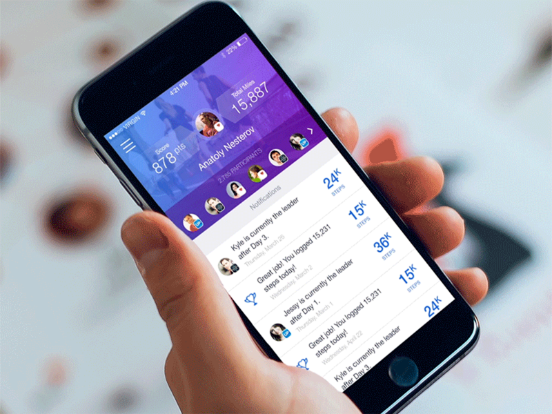
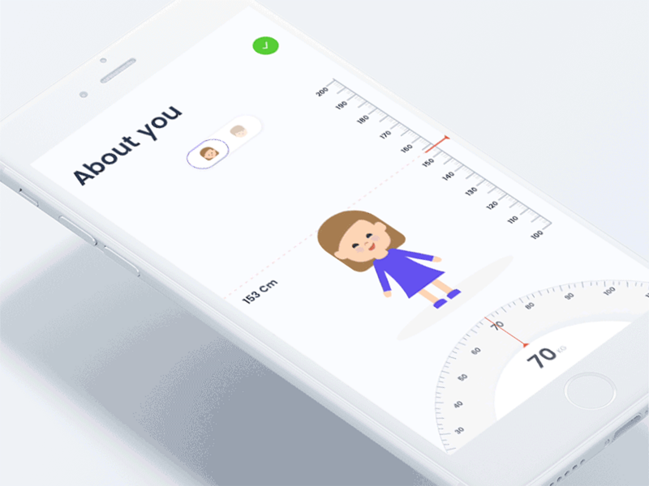

大量的实验表明：
动态表情包比静态表情图更有趣;
动态图比静态图更生动有吸引力;
App 里的动态效果也要比静态设计更能体现逼格。
看到这里，你是不是开始计算自己的 App 有几处动效了?那么如何通过动态效果来提升想提升用户体验?试试这10招动画效果无聊的 App
和有趣的体验之间可能只差了一个动画效果。好的动效能促进用户的参与感，越用越爱用。
下拉刷新算是基本的动态效果，大部分智能手机用户都已习惯这种操作。这样的刷新动效可以减少用户在等待内容加载时的焦躁感。以 Fitness Tracker 为例：它采用了一个小人在走路的动态效果。


2.登录引导
动态效果用得好，用户引导不能少。在登录的过程中，添加动画效果也可以打动用户。下图这个减肥 App
的用户引导过程就设计的非常有趣，用户在初次使用并设置自己的身高体重信息时，界面不仅设计的干净整洁，还配有动画效果。给人留下良好的第一印象。